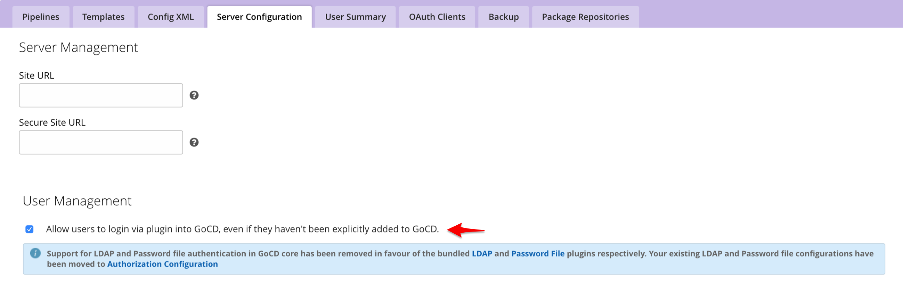

Authentication
A newly installed GoCD server does not require users to authenticate. This is great for a trial. However, it is one of the first things you should change, as soon as you decide to use GoCD more widely.
GoCD has two methods of authentication built into it: Password-file based authentication and LDAP/Active Directory authentication. You can also choose from a collection of community-maintained plugins for other methods of authentication, such as using Google or GitHub OAuth.
You can even write your own plugins for authentication (as in username/password combination) or authorization (as in deciding which GoCD roles a user should be allowed into) by using the authorization plugin endpoint.
“Authorization configuration” is the term used in GoCD for the configuration which allows a GoCD administrator to configure the kind of authentication and authorization used by it. GoCD can be setup to use multiple authorization configurations at the same time.
Note: The order of the configurations matters. They will be tried from the first one to the last one and each authorization configuration will be given a chance to authenticate a user, when a user tries to log in. If the user is successfully allowed by one of the configurations, then the following configurations will not be used.
Consider the example image below:

In this example, the password file authentication method will be tried first. If that succeeds, the user will be allowed to log in. If not, the LDAP authentication method will be tried next. If that succeeds, the user will be allowed to log in. If not, the user will be disallowed from logging in.
Built-in methods of authentication
Password-file authentication
Create an authorization configuration, by going to the “Admin” menu and then into “Security” and then “Authorization Configuration”.
Click on “Add” and provide any identifier (ID) for the configuration and then choose “Password File Authentication Plugin for GoCD”.
Provide the path to a password file on the GoCD server.
The password file plugin’s documentation has information about the values that can go into a password file.

LDAP/AD authentication
Create an authorization configuration, by going to the “Admin” menu and then into “Security” and then “Authorization Configuration”.
Click on “Add” and provide any identifier (ID) for the configuration and then choose “LDAP Authentication Plugin for GoCD”.
Provide the appropriate values for your LDAP server. You might need to talk to the LDAP/AD server administrator at your organization to get the right values.
The LDAP authentication plugin’s documentation has more information about the configuration.

It you’ve installed any other plugins, they will also be available at the “Authorization Configuration” page, ready to be setup.
Configurable properties
You can use one or more of the below to tweak settings such as the session configuration:
| System property name | Default value | Description |
|---|---|---|
go.server.session.timeout.seconds |
1209600 (14 days) |
Idle session timeout (in seconds). Do not set this to -1 else the session will never timeout. |
go.sessioncookie.maxage.seconds |
1209600 (14 days) |
Expiry of a session cookie. Set to -1 to expire the cookie on browser close. Do not set to 0 as this will cause the cookie to expire immediately. |
go.sessioncookie.secure |
N |
Set this to Y to allow a session cookie to be set only if the request was made over HTTPS. Do not set this property if the users access GoCD via HTTP url |
go.security.reauthentication.interval |
1800000 (30 mins in milliseconds) |
GoCD forces a perodic re-authentication of users, this is to ensure any changes like removing of users or roles in the external authorization server are reflected in GoCD. The re-authentication interval is controlled by this property. |
See the “Other config options” page for instructions around setting these system property values.
Controlling User Access
GoCD checks if an authenticated user is an existing user or a new user (logging in for the first time). For new users, there are two behaviors GoCD can operate under:
- Automatically register the new user in GoCD and continue with the login process.
- Deny access to the user if not already a registered GoCD user. New users will have to be explicitly added by an admin.
To switch the mode in which the GoCD Server operates:
- Login to GoCD as an admin
- Navigate to the “Admin” section
- Click on the “Server Configuration” tab
- Set the “Allow users to login via plugin into GoCD, even if they haven’t been explicitly added to GoCD.” checkbox

 Edit this page
Edit this page